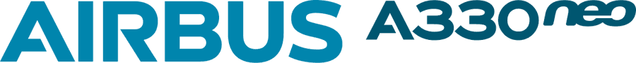
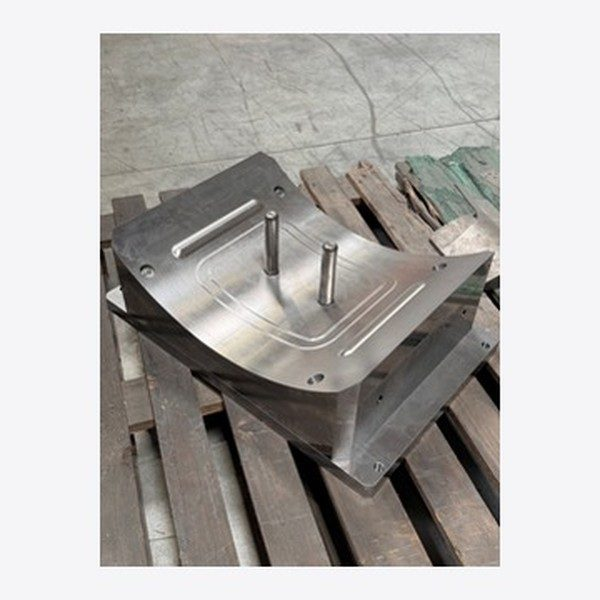
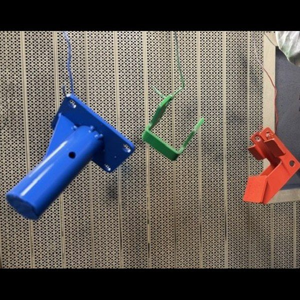
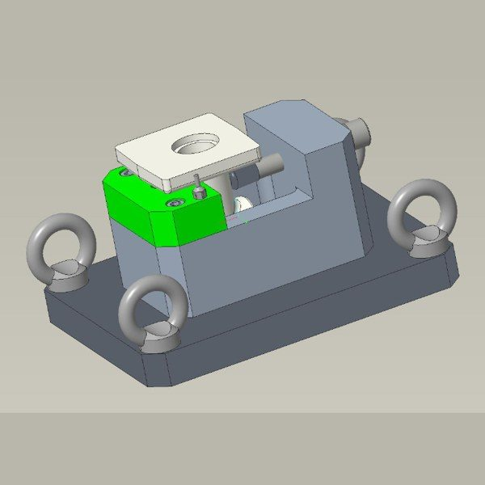

Ce que j'ai conçu, fabriqué et amélioré
Quatre projets, menés dans deux contextes : sur un site de production chez COAERO, et en atelier pendant ma formation à l'IUT.
En entreprise · COAERO
Projets menés en production
Des projets réalisés sur un site industriel, avec de vraies contraintes : un client, un budget, des délais, et des pièces qui partent ensuite sur des avions de ligne.

Projet de 2ᵉ annéeRéindustrialisation de l'A330 Neo
Revoir la fabrication de 35 pièces d'un réacteur d'Airbus, avec 50 600 € d'outillages, pour supprimer le travail manuel le plus long.
Voir le détail
Mission régulièreOutillages d'emboutissage
Concevoir les outils en acier qui donnent leur forme aux tôles, de la 3D à la pièce usinée.
Voir le détailÀ l'IUT d'Orléans
Projets de formation
Des projets menés en atelier pendant le BUT, de la conception assistée par ordinateur jusqu'à la pièce fabriquée de mes mains.

Projet de 2ᵉ annéeConception et fabrication d'une genouillère
Un projet mené de la conception jusqu'à la pièce peinte : découpe, soudure, perçage et finition.
Voir le détail
Projet de 2ᵉ annéeMontage d'usinage pour pièce de fonderie
Concevoir le montage qui tient une pièce métallique pendant son usinage : solide, précis, et peu coûteux.
Voir le détail